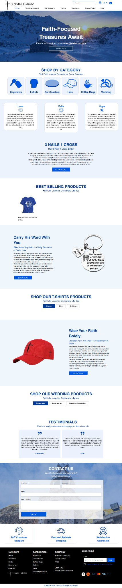

← Back to Work
Ecommerce
3 Nails 1 Cross
The challenge
Connect product discovery with the story behind the brand.
Key decisions
- Integrate story with shopping.
- Keep categories practical.
- Keep purchase actions clear.
The improved journey
Shoppers can understand the brand and continue naturally toward purchase.